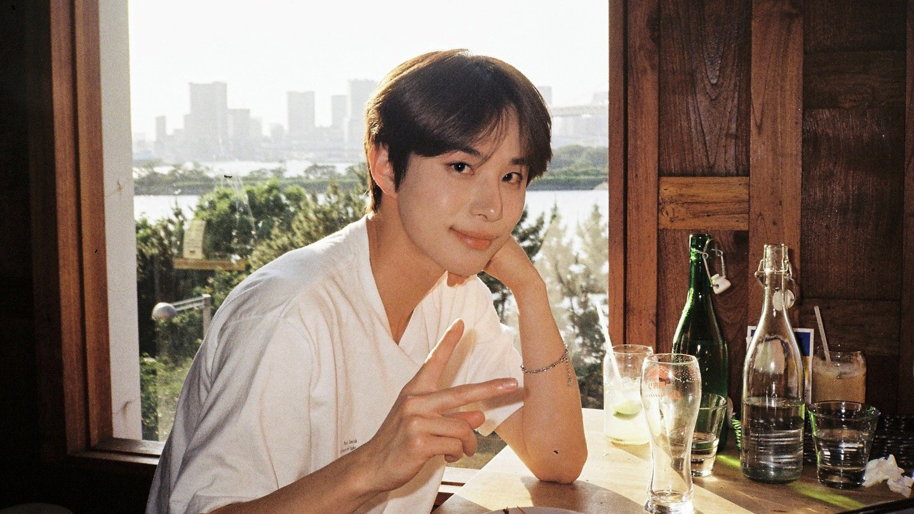

Soobin's WEB
HTML
CSS
JavaScript
HTML
안녕하세요.
아주대학교 소프트웨어학과 201720758 4학년
황수빈
입니다. 저는 졸업 프로젝트를 준비 중인데 아직 실력이 부족해요. 생활코딩을 시작으로 멋진 개발자가 되겠어요
두번째 이야기는 뭐가 좋을까요? 저는 사실 개발보다는 음악을 좋아해요. 작사, 작곡, 노래부르기 너무 조앙!
요즘 내가 제일 좋아하는 사람이에용~
